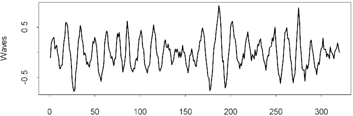
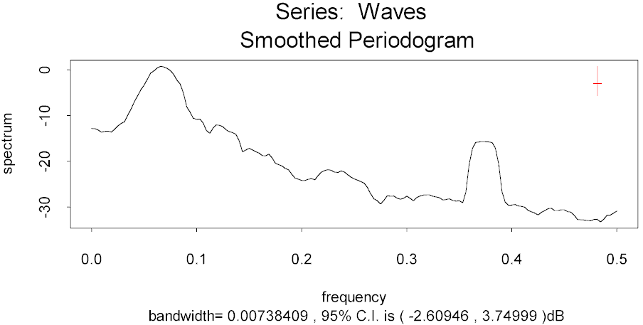

| / Home |
Keywords: time series, mixed spectra, filtering
The data give time series measurements on waves emanating from a cylinder suspended in a tank of water. The waves are believed to show a high frequency vibration, which is an artifact of the experiment equipment, as well as lower frequency vibration which reflects forces acting on the cylinder. It is of interest to identify and to filter out the high frequency vibration.
| Variable | Description | ||
| Waves | Relative vertical displacement at equi-spaced times | ||
Data File (tab-delimited text)
| Newton, H. Joseph (1988). TIMESLAB: A time series analysis laboratory. Wadsworth, Pacific Grove, California, page 290. |
| Smyth, G. K. (2000). Employing symmetry constraints for improved frequency estimation by eigenanalysis methods. Technometrics 42, 277-289. (Abstract - Zipped Postscript) |
Time series plot of the data:

The series appears to have a continuous spectrum, expect for a high frequency spike:
> spec.pgram(Waves,span=8,plot=T)

It is also possible to pick out the high frequency vibration using a discrete spectrum approach on a shortened series:
> out4 <- pronyfreq(Waves[1:50],nfreq=4,constant=F) > out4$freq/2/pi [1] 0.03635873 0.06433893 0.08958704 0.36787400
The first 3 frequencies here reflect the smooth peak in the periodogram, while the frequency at 0.37 is the spike in the periodogram.
|
Home - About Us -
Contact Us Copyright © Gordon Smyth |